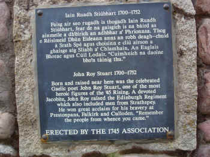

Urnaigh Iain Ruaidh Stiùbhairt
La Prière de John Roy Stewart 's Prayer
Two pastiches of Psalm 23 (The Lord is my shepherd, I shall not be in want...)Deux pastiches du Psaume 22 (Le Seigneur est mon berger, rien ne saurait me manquer...)

John Roy is the author of the
previous three poems
and, possibly, of the dirge
"Lament for Lady McKintosh"
Tune
"
John Roy Stewart"
Sequenced by Christian Souchon
|
"Composed by Alexander McGlashan (1740- 1797) , who was nicknamed 'King' for his attention to extravagant apparel. Hardie (1992) says he has the "twofold distinction" of having taught violin to Nathaniel Gow and employing him as a cellist in his dance band. John Glen (1891) finds the tune first in print in McGlashan's collection." (1786?) Source: Andrew Kuntz, "The Fiddler's Companion". (http://www.ibiblio.org/fiddlers/) |
Composée par Alexander McGlashan (1740- 1797) surnommé "le Roi" en raison de son dandysme. Selon Hardie (1992), il avait la "double particularité" d'avoir enseigné le violon à Nathaniel Gow et de l'avoir eu comme violoncelliste dans son orchestre. Selon John Glen (1891) le morceau fut imprimé pour la première fois dans le recueil de McGlashan (1786?).
Source: Andrew Kuntz, "The Fiddler's Companion". (http://www.ibiblio.org/fiddlers/)
|
The English "Psalm" below, by John Roy, follows the Gaelic "Prayer" in the middle column but does not translate it . Having sprained his ankle when under hiding, after the battle of Culloden, and while resting himself beside a cataract, keeping his foot in the water, John Roy composed the Gaelic piece as a prayer, and the two ensuing stanzas in English ; both of which he seems to have couched in the style of language peculiar to the Psalms. In the English text 8 syllable lines alternate with 6 syllable lines, which is the characteristic structure of Psalm 23 in the metrical translation of the Scottish Psalter (1650) , for instance: The Lord's my shepherd, I'll not want. He makes me down to lie In pastures green: he leadeth me The quiet waters by. etc. The "Sternhold and Hopkins Psalter" has two versions, both different from the Scottish one, but with the same rhythmic structure. An endless list of tunes suits these lyrics. |
Le texte gaélique ci-dessous précède sur le manuscrit le "psaume" anglais de la première colonne, mais il n'en est pas la traduction. S'étant foulé la cheville en se cachant après Culloden, John Roy s'était assis au bord d'un torrent pour tremper son pied dans l'eau. Il en profita pour composer ce texte gaélique en forme de prière, suivi de 2 strophes en anglais. Dans les deux morceaux, il s'inspire apparemment du style particulier des psaumes de la Bible. Le texte anglais alterne des vers de 8 et de 6 syllabes, une structure que l'on trouve, pour le psaume 22, dans la traduction "métrique" du "Psautier d'Ecosse" (1650) : Le Seigneur est mon Berger qui Me pait. Je repose Dans des prés verts. Il me conduit Auprès des eaux calmes, etc. Le "Psautier de Sternhold et Hopkins" contient 2 versions, toutes deux différentes de l'écossaise, mais présentant la même structure rythmique. Une infinité de timbres sont utilisés pour ce psaume. |
{kind=link}
|
JOHN ROY'S PRAYER
1. By a streamlet, worn and tired The poor Christian John Roy sits A warrior still lacking rest His ankle sprained and wretched the time. If Campbells or Sutherlands come Before my poor ankles are healed Though they come as oft as they will With their speed they'll not lay hand on me. I'll make the charm Peter made for Paul [1] When his foot was sprained leaping a bank, Seven prayers [2] in name of Priest and of Pope As plaster to put round about. One charm more for Mary of Grace Who can a believer soon heal; I believe, without doubt or delay, That we shall discomfort our foes. 2. One more tale, and I hate that 'tis true, That is now known everywhere, Every keen man who once served the King Is now hunted over the moors. Wretched carls without honour or worth But ready for aught for reward, Take advantage of us everywhere - O Christ, turn this wheel round about! If it turns fav'rably now And the French in Flanders prevail [3} In that prophecy [4] still rests my hope That a force from o'erseas will bring aid. May Fortune protect it with grace, Like Moses, when ebbed the Red Sea, [5] And may George and his rascals be drowned As was Pharao the fool with his host. 3.When Israel grew weary of grace, On that day was Saul made their king, (6] He brought scourging with malice and plague On themselves, on their children and goods. Likewise was Britain in woe Since they forsook the right and their King; 'Gainst us Heaven's conceived great wrath Woe is me! for their lot has gone dry! O God reared by Mary of grace Incline with thy favour thine ear, As I worship with knee on the ground Accept from me a special prayer; We are seeking only the right That George and the Whigs took away, With thy justice, give guidance and strength, And keep us from th' oppression of foes! Amen Translated by John Lorne Campbel, "Highland Songs of the '45", 1932 |
URNAIGH IAIN RUAIDH
1. Air taobh Sruthain 'n As huidhe's e sgìth, Thu 'n Criosdaìdh bochd Iain Ruadh, Na cbeatharnach fhathasd gun sìth, Sa chìis air tuisleadh sa'n tìm gu truagh. Ma thig Duimhnich no Cataich a'm dhàil, Mu'n slanaich mo lùìgheannan truagh, Ged thig iad cho trie a's is àill, Cha chuir iad orni lamh le luath's. Ni mi'n ubhaidhf rirm Peadar do Phàl,[1] 'S a lùighean air fas leum bruaich, Seachd paidir [2] 'n ainm Sagairt a's Pàp, Ga cliuir ris ua phlàsd mu'n cuairt. Ubhaidh eile as leith Mhuire nan gràs, 'S urrainn creideach dheanadh slan ri uair; Tha mis' am chreideamh gun teagamh, gun dail, Gun toir sinn air ar naimhdean buaidh. 2. Sgeul eile 's gnr h-oil learn gu'r fior, Tha 'n drasd aims gach tir mu 'n cuairt, Gach fear gleusda bha feumail do 'n tigh, Bhi ga 'n ruith t'eadh gach frith air an ruaig. Bodaich dhona gun onoir, gun bhrigh, Ach gionach gu ni air son duais, Gabhail fath oirnn 's gach àit anns am bi— Cuir a chuibhle so, Chriosda, mu'n cuairt! Ma thionndas i deiseal an dràsd, 'S gu'm faigh Frangaich am Flandras buaidh, [3] Tha m'earbs' as an tairgneachd bhà, [4] Gun tig armailt ni stàth dhuinn thar chuan. Gun toir Fortan dhà didean le gràs, Mar Maois 'n uair a thràigh a Mhuir Ruadh [5] S gum bi Deòrsa le 'dhrealairibh bàitht, Mar bha 'n t-amadan Phàraoh 's a shluagh. 3. N uair bha Israel sgith 'san staid ghràis, Rinneadh Sàl an là sin 'na righ, [6] Thug e sgiùrsadh le miosguinn us plàigh, Orra féin, air an àl 's air an ni. Is amhuil bha Breatunn fo bhròn, O'n a thrèig iad a chbir's an Righ; Ghabh flaitlieas rinn corruich ro-mhor, Crom-an-donais! chaidh 'n seòrsa'n diasg! A Righ shocraich Muire nan gràs, Crom riumsa le bàidh do chluas; 'S mi 'g ùmhladh le m' ghlùn air an làr, Gabh achanaich àraid uam. Cha n-eil sinn a' sireadh ach còir, Thug Chuigs agus Dheorsa uainn; Réir do cheartais thoir neart dhuinn a's treoir, A's cum sinn o fhoirneart sluaigh! Amen. Source: "Sar Obair nam Bard Gaeleach", John McKenzie, Glasgow, 1865. |
LA PRIERE DE JOHN ROY
1. Dans le ruisseau Struthan An Eas Moi, pieux John Roy, - triste journée! -, Je trempe, somnolent, bien las, Ma cheville foulée. Que les Campbell, les Sutherland Même avant qu'elle ne guérisse Tant qu'ils voudront, fouillent la lande, Je ne cours aucun risque. Je sais le charme dont Pierre usa Pour guérir saint Paul d'une foulure: [1] Les sept prières [2] au nom du Pa- -pe et des prêtres, qui sont aussi sûres Qu'un emplâtre. Un autre charme encor Par la vierge Marie, pleine de grâce, Qui de vos ennemis les plus forts Sous peu vous débarrasse. 2. J'entends dire, et ce n'est que trop Vrai, partout où je passe, Qu'à tous ceux qui servaient le Roi Voici qu'on fait la chasse. Des malandrins sans foi ni loi, Gourmands de récompense, Profitent de gens comme moi. Christ, fais tourner la chance! A notre avantage qu'elle soit Que les Français soient vainqueurs en Flandre, [3] Comme la prophétie [4] le prévoit Qu'un ami d'outre-mer vers nous tende La main. Et que la Fortune alors L'assiste, tout comme elle aida Moïse, Que devant lui la Mer s'ouvre encor, [5] Qu'Hanovre elle engloutisse! 3. Quand Israël las du soutien De la grâce divine, Eut Saül pour roi, [6] il attira Sur elle maux, famine. Ainsi Britania souffre-t-elle Des hautes forfaitures: La juste colère du Ciel, Tout le peuple l'endure. Dieu, que la Sainte Vierge enfanta, Prète donc l'oreille à mes prières. Je suis à genoux, comme Tu vois, Et mes voeux sont sincères. Nous ne Te réclamons que le droit Bafoués par les Whigs et par le roi George. Donne justice et force à la fois A ceux que l'on égorge! Amen! Traduction Christian Souchon (c) 2009 |

|
[1] Whereas John Lorne Campbell writes in his "Highland Songs of the '45": "I have not been able to discover the [incantation] to which Stewart here refers, John McKenzie in his "Beauties of Gaelic poetry" (Sar obair nam Bard Gaelach) comments this line as follows:
"An incantation of great antiquity, handed down to us from the classic era of Homer. It has still its class of sturdy believers in many remote and pastoral districts of the Highlands. The Editor well recollects with what self-complacency and sangfroid the female Aesculapii of his native glen used to repeat the "Edlas sgiuchadh / tithe", over the hapless hobbler of sprained ankles. With the success or result of the procedure we have nothing to do: its efficacy was variously estimated. The " Cantatum orum" was a short oration or "Crambo", in the vernacular language; and if the dislocated joints did not jump into their proper places during the recitation, the practitioner never failed to augur favourably of comfort to the patient. There were similar incantations for all the ills to which human flesh is heir: the toothache, with all its excruciating pain, could not withstand the potency of Highland magic; dysentery, gout, dysury, etc... had all their appropriate remedies in the never-failing specifics of incantation. Nor were these cures confined to the skilful hand of the female necromancer alone; an order of men, universally known by the cognomen of the "Cliar sheanachain," were the legitimate practitioners in the work. Two of these metrical incantations we may briefly quote as specimens of the whole. The first relates to the cure of worms in the human body and runs thus: "Mharbhainn dubhig 's mharbhainn dohbheag, A's naoi naoinear dheth a seòrsa. 'S fiolar crion nan casan lionmhor, Bu mhor pianadh air feadh ftola," etc... Here follows the other, denominated "Kolas a Chronachaidh" or " Casg Beum-Sula." During its repetition, the singular operation of tilting a bottle with water, was being carried on; and the incantation was so sung as to chime with the gurgling of the liquid, as it was poured into the vessel; thus forming a sort of uncouth harmony, according well with the wild and superstitious feelings of the necromancers. From the fact that one or two Irish words occur in it, and that the charm was performed in the name of St Patrick, it is probably of Irish origin; but we know that it held equally good in the Highlands of Scotland, as it did across the Channel: "Deanamsa dhutsa, colas air sul, A uchd 'I lie Phàdruig naoimh, Air at amhaich a's stad earabuill, Air naoi conair's air naoi connachair, As airnaoibean seang sith. Air suit scanna-ghilh's sealla seanna.mhna, Mas a suil lir i, i lasadh mar bhigh, Mas a sùil mnath i, i bhi dh'easbhnidh a cich, Falcadair fur agus fuarachd da fuil, Air iin ni, 's airadaoinc, Air a crodh, 's air a caoirich fein." [2] "seachd paidir"= seven paternosters. [3] This refers to the war of the Austrian Succession (1740 - 1748) in which much of the fighting tokk place in Flanders. After Fontenoy, the French gained victories at Roucoux (October 1746), Lauffeld (June 1747), Bergen-op-Zoom (September 1747) and Maastricht (May 1748), until the Peace of Aix-La-Chapelle put an end to the war and to the Jacobites' hopes that the French would intervene in their favour. [4] What grounds there were for the expectation that the Prince would return with French aid, remains unclear. Other songs mention such prophecies: When the King enjoys his own again (first 2 stanzas) Lillibulero (last stanza) And since an ancient book of prophecies announced that the Scots would gain a great victory at Gladsmuir , the battle of Prestonpans was renamed "Battle of Gladsmuir" though both plains are over a mile away from each other, to tally with this prediction. [5] Exode, 14,21. [6] Ier Livre de Samuel, 8, 12. |
Tandis que John Lorne Campbell écrit dans ses "Chants des Highlands de 1745": "je n'ai pas réussi à découvrir à quelle incantation Stewart fait allusion, John McKenzie , dans ses "Beautés de la poésie gaélique" (Sar Obair nam Bard Gaelach) commente ainsi ce vers:
"Il s'agit d'une incantation très ancienne qui remonte à l'époque d'Homère. Elle a encore ses défenseurs acharnés dans beaucoup de régions reculées et pastorales des Highlands. Le collecteur se rappelle avec quelle assurance et quelle dignité les Esculape féminines de son glen natal récitaient le "Edlas sgiuchadh tithe" sur les pieds tordus et les chevilles foulées. Peut importe ici le résultat ou le succès de ces pratiques, dont l'efficacité était diversement appréciée. Le "Cantatum orum" était une courte prière, également appelée "Crambo" dans la langue vernaculaire et même si l'articulation disjointe ne rentrait pas dans son logement pendant la récitation de la formule, le praticien ne manquait pas d'augurer favorablement de la guérison de son patient. Il y avait de telles incantations pour tous les maux de l'humanité souffrante: le mal de dents et son cortège d'effroyables douleurs ne résistaient pas à la magie des Gaëls, non plus que la dysenterie, la goûte, la dysurie, etc. pour lesquelles il y avait toujours un remède infaillible dans la panoplie des incantations. D'ailleurs cette thérapie n'était pas l'apanage des nécromanciennes du beau sexe. Une catégorie d'hommes universellement connus sous leur surnom de "Cliar sheanachain", étaient habilités à pratiquer le grand oeuvre. Les deux incantations rimées citées ci-après peuvent être considérées comme des spécimens représentatifs de l'ensemble. La première sert au traitement des vers. Elle s'énonce ainsi: "Mharbhainn dubhig 's mharbhainn dohbheag, A's naoi naoinear dheth a seòrsa. 'S fiolar crion nan casan lionmhor, Bu mhor pianadh air feadh ftola," etc... Voici maintenant la seconde, appelée "Kolas a Chronachaidh" ou " Casg Beum-Sula." Alors qu'on la récitait, on inclinait une bouteille d'eau et l'incantation était chantée de façon à épouser les gargouillis de l'eau versée dans le récipient, en une sorte d'harmonie approximative, en symbiose avec les sentiments primitifs et superstitieux des nécromanciens. Les quelques mots d'irlandais qu'on y trouve, ainsi que l'invocation de Saint Patrick indiquent une origine irlandaise probable. Mais à n'en pas douter elle était également efficace de part et d'autre du Canal du Nord: "Deanamsa dhutsa, colas air sul, A uchd 'I lie Phàdruig naoimh, Air at amhaich a's stad earabuill, Air naoi conair 's air naoi connachair, As airnaoibean seang sith. Air suit scanna-ghillc 's sealla seanna.mhna, Mas a suil lir i, i lasadh mar bhigh, Mas a sùil mnath i, i bhi dh'easbhnidh a cich, Falcadair fu..r agus fuarachd da fuil, Air iin ni, 's airadaoinc, Air a crodh, 's air a caoirich fein." [2] "seachd paidir"= sept "pater noster". [3] Allusion à la guerre de succession d'Autriche (1740 - 1748) où le principal théaâtre d'opérations fut la Flandre. Après Fontenoy, la France remporta les victoires de Roucoux (octobre 1746), Lauffeld (juin 1747), Bergen-op-Zoom (septembre 1747) et Maëstricht (mai 1748), jusqu'à ce que la paix d'Aix-la-Chapelle mette fin aux hostilités et aux espoirs Jacobites d'intervention française en leur faveur. [4] Sur quoi était fondé cet espoir de voir le Prince revenir avec l'aide des Français, on l'ignore. D'autres chants font état de telles prophéties: Si le Roi reprend sa charge (2 premières strophes) Lillibulero (dernière strophe) Et, comme un ancien livre de prophéties annonçait que les Ecossais remporteraient une grande victoire à Gladsmuir , la bataille d Prestonpans fut rebaptisée "Bataille de Gladsmuir", bien que les deux plaines soient distantes de quelques kilomètres, pour que la prédiction soit réalisée. [5] Exodus, 14,21. [6] 1st Book of Samuel, 8, 12. |
|
JOHN ROY'S PSALM
1. The Lord’s my targe, I will be stout With dirk and trusty blade, Though Campbells come in flocks about I will not be afraid. "The Lord’s the same as heretofore, He’s always good to me; Though red-coats come a thousand more, Afraid I will not be. "Though they the woods do cut and burn, And drain the lochs all dry; Though they the rocks do overturn And change the course of Spey; "Though they mow down both corn and grass, Nay, seek me underground; Though hundreds guard each road and pass— John Roy will not be found." 2. "The Lord is just, lo! Here's a mark, He's gracious and kind, While they like fools groped in the dark, As moles He struck them blind. "Though lately straight before their face, They saw not where 1 stood ; The Lord's my shade and hiding-place — He's to me always good. "Let me proclaim, both far and near, O’er all the earth and sea, That all with admiration hear, How kind the Lord's to me. "Upon the pipe I'll sound his praise. And dance upon these stumps, A sweet new tune to Him I'll raise, And play it on my trumps. |
LE PSAUME DE JOHN ROY
1. "Le Seigneur est mon bouclier J'ai mon poignard, ma lame Les Campbell peuvent bien rôder Je reste inébranlable. "Le Seigneur n'a jamais cessé De me fournir son aide. Mille habits rouges ne feraient Qu'à la frayeur je cède. "Qu'ils coupent, brûlent la forêt Assèchent lacs, rivières; Qu'ils détournent même la Spey, Retournent chaque pierre; "Qu'ils fauchent l'herbe dans les prés Qu'ils me cherchent sous terre! Où John Roy a pu se cacher Est pour eux un mystère. 2. "Le Seigneur est juste. En voici Une indéniable preuve. Ces fous me cherchaient dans la nuit, Il les rendit aveugles. "J'étais sous leur nez récemment Mais ils ne m'ont pas vu. Le Seigneur est mon paravent. J'en suis vraiment confus. "Je chante Sa gloire en tous lieux Et sur mer et sur terre Afin que l'on apprécie mieux Comme Il me considère. "Au son d'un rustique instrument J'agite mes gambettes Et je Lui fais ce nouveau chant A jouer sur ma trompette. Trad. Christian Souchon 2009 |
|
JOHN ROY (Ruadh, red) (1700 - 1752),
as he was commonly called, was one of the men who came to the front in the rising of the "Forty-five." Scott, in "Tales of a Grandfather," calls him "a most excellent partisan officer." Chambers, in his "History of the Rebellion," says "he was the beau-ideal of a clever Highland officer." His courage and resource, his devotion and trustworthiness, his gift of song, and the culture and military skill which he had acquired from service at home and in France, made him a great favourite with Prince Charlie. He used to call him "The Body," and loved to consult him. Besides, there was the tie of blood, and the subtle force of sympathy. Both were exiles, and disinherited. Both were fighting in the same cause, and animated by the same hope. When the Prince came to his kingdom, then John Roy and others would get their rights. The "auld Stewarts back", Scotland would be Scotland again. In "The Lyon in Mourning" a touching account is given of one of the last meetings of the Prince and John Roy. The Prince, after his many wanderings, had reached Badenoch, and was in hiding in "The Cage." He sent for John Roy, and, when he heard that he was at hand, "he wrapped himself up in a plaid, and lay down, in order to surprise John Roy the more when he should enter the hut. In the door there was a pool, or puddle, and when John Roy was entering the Prince peeped out of the plaid, which so surprised John Roy that he cried out, ‘Oh, Lord! my Master,’ and fell down in a faint." This simple incident brings out vividly the relation in which they stood to each other, the kindly humour and cheerfulness of the Prince after all his trials, and the unfailing love and loyalty of his follower. John Roy was the son of Donald, grandson of John, the last of the Barons of Kincardine. His father was twice married. His second wife was Barbara Shaw, daughter of John Shaw of Guislich, a descendant of the Shaws of Rothiemurchus. It is said she was fifty-three years old when she married, and John was her only child. Motherhood at such an age is rare, but not incredible... John Roy was born at Knock, Kincardine, in 1700. He received a good education, and his position in society and residence in France and Portugal gave him a higher culture than was common in his native strath. He was for some time Lieutenant and Quarter-master in the Scots Greys. In his songs he refers to this regiment, and in one addressed to his comrade and friend, Nathaniel Grant of Delrachny (Duthil), he speaks of the service they had seen, and of their hopes of preferment in the "Black Watch," which was being raised in 1730. But these hopes were dashed. John Roy applied for a commission, and was refused. Irritated by this rebuff, he soon after retired from the King’s service. An interesting glimpse is got of him at this time in a letter from Lord Lovat to the Laird of Grant, dated, Drumsheugh, near Edinburgh, 25th October, 1733—"... with poor John Roy Stewart... we drank heartily ... to the downfall of [our] enemies." ... In the trial of Lord Lovat, ...one of the witnesses [stated] that Lovat had connived at the escape out of goal (1736)...[that he] stopped [at Lovat's] about six weeks...[and that] they diverted themselves with composing ...burlesque verses: "When young Charlie does come o’er, There will be blows and blood good store." ..."It was framed in Erse, and this is the substance of one verse." It appears that John Roy went shortly after this to France, which was a kind of Cave of Adullam for discontented Scots. One Charles Stuart, another witness in the Lovat Trial, said that he met him at Boulogne, and that he was going to Rome, and expected through my Lord Lovat’s influence to get the post that Colonel Allan Cameron had (State Trials XVIII. 588-9). Another witness still, John Gray of Rogart, may be cited. He was asked, "Did you know John Stewart, commonly called Roy?" His answer was, "I have been acquainted with him when he was Quartermaster in some of the Dragoons." He was further asked, "Did you see him among the Rebels?" and replied, "I saw him at Stirling." What clothes had he on?" "He goes always very gay. Sometimes he had Highland clothes, and at other times long clothes." John Roy, having cast in his lot with the Jacobites, took an active part in the fighting in Flanders. He was in the battle of Fontenoy, 11th May, 1745. The night before, he, with another Scot, made a visit to the English camp, and spent a happy hour with Lewis Grant of Achterblair and other friends. Next day they met in bloody strife. It was on the 19th August, 1745, that the "Bratach Bàn," "the White Banner," was unfurled at Glenfinnan . The news of the rising soon reached France, and many a brave soldier, whose heart was in the Highlands, came hurrying home to take part in the struggle. Among these was John Roy. He joined Prince Charlie at Blair in Athole, and brought with him letters with offers of service from several men of note, but they proved of little value. As is common in times of excitement, the promise was better than the performance. At Edinburgh, where John Roy had been formerly stationed with the Scots Greys, he had no difficulty in raising a regiment. It was called "the Edinburgh Regiment," and though mainly made up of recruits from the mixed crowd that thronged the grey Metropolis of the North, it contained not a few men from Perthshire and Speyside, who added much to its strength and mettle. John Roy did good service at Prestonpans , where his friend Colquhoun Grant of Burnside also distinguished himself... John Roy also took part in the skirmish at Clifton, when the cry "Claymore," "Claymore," struck terror into Cumberland’s men. The next notice we have of him is at Falkirk. Some of his old Dragoons were there under Colonel Whitney. Whitney recognised his friend, and cried out "Ha are you there? We shall soon be up with you." Stewart shouted in reply, "You shall be welcome. You shall have a warm reception." The words were hardly spoken when the gallant Colonel was struck by a chance shot, and fell dead. In the retreat northwards, John Roy was of great service, not only from his skill and resource, but from his intimate knowledge of the country. His Regiment is noticed in almost every Order, as specially singled out for patrol and scouting. "The guard of Roy Stewart’s men are desired to make frequent patrols out of the town on the roads that go to Cullen and Keith. One of the officers are desired to be always with the patrol, who will strictly examine every one they meet either going or coming, and if they stop any suspected person will send him to my Lord John Drummond." When stationed in Strathbogie, an attempt was made to surprise John Roy, but he was too old a soldier to be taken unawares. He retired to Fochabers, and from there with Parthian cunning he made a sudden back stroke by night, cutting off a party of Campbells, and some thirty dragoons, and carrying terror into the town of Keith. John Roy commanded the Edinburgh Regiment at Culloden, which formed part of the first line that bore the brunt of the battle. It was said of him afterwards by one of Cumberland’s captains that "if all the Highlanders had fought as well as the officer with the red head and the little hand, the issue might have been different." He himself poured forth his grief in a "Lament for the Brave who had fallen on Drummossie Muir", in which he attributes the defeat to the absence of the Macphersons and many of the best men, and the fierce blinding storm that blew in the faces of the Prince’s soldiers. He also not obscurely hints at treachery. His faith in Lord George Murray had been shaken, and he knew that others of the Highland Chiefs shared this feeling. Long afterwards his son, referring to a reverse in America, expressed the old sentiment, "From April battles and Murray generals, good Lord, deliver us." John Roy seems to have gone at first to Gorthleg. He also attended the gathering at Ruthven Castle.
Another time he was in hiding in Glenmore, where he had friends. A party of soldiers having got a hint from an Irish informer, were on his track. They had sat down to rest, with their drum on the path, when by came a fair-haired boy carrying a cog of milk. "What is your name?" they asked. He said "Peter Bell." "Where are you going?" "To my father, who is working in the wood." As he stood talking to them he began to look at and handle the drum, as if curious about it. One of the soldiers said—"That’s a pretty cog" (it was rimmed with silver). "What will you take for it?" "I will give it for this bonnie thing," he answered. They feigned to agree; but he had no sooner got hold of the drum than he made the woods ring with the notes of a well-known Gaelic air— "Buaidh thap leat Ian Ruaidh, ‘S tric a bhuail thu campaid." And then with the quickness of lightning he turned to another tune that meant warning— "Bith falbh, ‘s na fuirich, Bith falbh, bith falbh! Na tig a nochd tuillidh, Tha ‘n toir a tighinn thugad; Na tig a nochd tuillidh, Bith falbh, bith falbh!" "Be off, and stay not, Away, away! Come not again to-night, The pursuers are near; Come not again to-night, Away, away! John Roy heard the sounds, and cried out—"Whatever drum that is, the beat is Peter Bell’s," for he had taught Peter himself. After this narrow escape, John Roy fled to Nethyside. He passed a night at Balnagown, where there was a wedding. Eighty-four years after, an Abernethy lady, Marjory Stewart, died at Grantown in her 101st year, who used to tell how she had been present at the marriage, and had danced with John Roy. There are some alive still who remember her. From Balnagown John Roy went to Bad-an-Aodinn. There one day, resting in bed, and making merry with a child to whom he was singing and telling stories, a girl, Mary Grant, Achernack, rushed in crying that the red coats were coming. With ready wit the gude wife cast an old ragged plaid about John Roy, and gave him a staff; and so in the guise of a beggar, cripple and bent, he crept along the hillside till he got within the shelter of the forest. His next place of refuge was at Connage , on the other side of the hill from Bad-an-Aodinn. In a wild, lone gorge at the foot of the cliff, shaded by birches and hazel, there still lies a smooth slab, under which he used to shelter. There, wrapped in his plaid, with his broad-sword by his side, he would lie, with the bracken for his bed and the music of the brook for his lullaby. A little girl fetched him food, and when a good report was brought he would climb the hill to Connage, and spend a happy hour with his friend John Stewart. But this could not last long. Tidings were brought to him that the Prince was in Badenoch, and that he was wanted. He gave his sporran as a keepsake to John Stewart, and set out. Kincardine, Glenmore, the Lolaraig, and the haunts he loved so well were passed, with the sad foreboding that he should see them no more. He joined Prince Charles, as already mentioned, at Ben Alder, and from there the party, on the 14th September, moved to Corvoy, then to Aitnacarrie, Glencanger, and Borrodale. On the 20th September they embarked on board a frigate that had been waiting for them, and sailed for France. John Roy never returned. The Rev. John Grant, in the old Statistical Account of Abernethy (1792) says that he died in 1752, and adds in his shrewd, pithy way— "By this means his talents were lost to himself and to his country. He had education without being educated; his address and his figure showed his talents to great advantage. He was a good poet, in Gaelic and in English." Source:" In the Shadow of Cairngorm " (Chronicles of the United Parishes of Abernethy and Kincardine), published in 1900. On 13th September John Roy rejoined the Prince at Uiskchilra and on the 20th sailed for France from Loch nan Uamh together with the Prince, Lochiel and other Jacobite leaders. In France he was granted a baronetcy by the Chevalier de Saint Georges, which was the last patent of nobility granted by a Stewart claimant. He died in France in 1752. |
JOHN ROY (Ruadh, le roux) (1700 - 1752),
fut l'une des figures marquantes du soulèvement de 1745. Walter Scott dans ses "Contes d'un grand-père" dit de lui qu'il était le "parfait officier partisan". Chambers, dans son "Histoire de la rébellion" va même jusqu'à le proclamer "l'idéal parfait de l'officier éclairé des Highlands". Son courage, sa présence d'esprit, sa loyauté, ses talents de chanteur, sa culture et sa maitrise de l'art de la guerre, acquises tant dans son pays qu'en France, lui valurent la faveur du Prince Charles qui se plaisait à l'appeler "The Body" et prenait souvent son avis. Une subtile sympathie les unissait, procédant des liens du sang et de leurs épreuves communes. Tous deux étaient exilés et déshérités. Ils combattaient pour la même cause et étaient animés du même espoir. Si le Prince recouvrait son royaume, John Roy et d'autres recouvreraient leurs droits. Une fois "les Anciens Stuart de retour" , l'Ecosse serait à nouveau l'Ecosse. Dans "Le Deuil du Lyon" , on trouve le récit émouvant d'une des dernières rencontres entre le Prince et John Roy. Le Prince après de longues errances était arrivé à Badenoch et se cachait dans ce qu'il appelait "sa Cage". Il envoya chercher John Roy et, quand il apprit qu'il viendrait, "il s'enveloppa dans un plaid et se coucha pour augmenter la surprise de John Roy quand celui-ci entrerait dans la hutte. Sur le pas de la porte il y avait une flaque d'eau que John dut enjamber, le Prince sortit alors de dessous le plaid, ce qui surprit tant son visiteur qu'il manqua de s'évanouir". Cette anecdote illustre bien la complicité qui existait entre eux, l'humour bon enfant et l'enjouement du Prince après tant d'épreuves, ainsi que l'affection et la loyauté indéfectible que lui vouait son partisan. John Roy était le fils de Donald, petit fils de John, dernier des Barons de Kincardine. Son père s'était marié deux fois. Sa seconde épouse Barbara, était la fille de John Shaw de Guislich, qui lui-même descendait des Shaw de Rothiemurchus. On dit qu'elle avait cinquante-trois ans quand elle se maria et John fut son unique enfant. La maternité à cet âge est rare mais non impossible... John Roy est né à Knock, Kincardine, en 1700. Il reçut une bonne éducation et son statut social, ainsi que les séjours qu'il fit en France et au Portugal, lui donnèrent une culture supérieure à celle de ses pairs dans sa vallée natale. Il fut quelque temps lieutenant et quartier-maître dans le régiment des "Gris Ecossais". Il parle de ce régiment dans ses chants et dans l'un d'entre eux, adressé à son collègue et ami Nathaniel Grant (Duthil), il évoque leurs états de service et leur espoir d'être admis à la "Garde Noire" qui venait d'être constituée (1730). Espoirs déçus. John Roy fit une demande pour un poste d'officier qui fut rejetée. Irrité par ce refus, il démissionna peu après de l'armée. On a une idée de l'état d'esprit qui l'animait alors, grâce à une lettre de Lord Lovat au Laird de Grant, datée de Drumsheugh, près d'Edimbourg, le 25 octobre 1733: "...Avec ce pauvre John Roy Stewart...nous avons trinqué...au renversement de nos ennemis." ... Lors du procès de Lord Lovat...un des témoins déclara que Lovat, alors Sheriff d'Inverness l'avait fait sortir de prison (1736) et accueilli chez lui pendant six semaines...et qu'ensemble ils se divertissaient en composant des vers burlesques...: "Quand le jeune Charlie viendra Des coups et des bosses , il en pleuvra" , précisant que c'était là une traduction de l'erse (gaélique), mais bien la substance d'une strophe. Il est établi que John Roy partit peu après pour la France, qui était une sorte de caverne d'Ali Baba pour les Ecossais mécontents. Un certain Charles Stewart, autre témoin au procès Lovat, déclara l'avoir rencontré à Boulogne, alors qu'il partait pour Rome où il comptait sur l'entremise de Lord Lovat pour obtenir le poste occupé par le colonel Allan Cameron... On peut aussi citer un autre témoin, John Gray de Rogart qui l'avait connu quand il était quartier-maître dans les dragons et qui l'avait revu à Stirling. A la question "comment était-il habillé?", il répondit: "Toujours de façon chatoyante. Tantôt en costume des Highlands, tantôt en vêtements longs". Ayant confié son sort aux Jacobites, John Roy prit une part active aux combats en Flandres. Il était à la bataille de Fontenoy 11 mai 1745. La veille, avec un autre Ecossais, il rendit visite au camp anglais où il passa une heure de détente à s'entretenir avec Louis Grant d'Achterblair et d'autres amis. Le lendemain ils s'affrontaient dans le sanglant combat. C'est le 19 août 1745 que le "Bratach Bàn", "l'étendard blanc", fut déployé à Glenfinnan . La nouvelle parvint en France et de nombreux braves soldats fidèles à leurs Highlands d'origine se précipitèrent pour prendre part au combat, et parmi eux, John Roy. Il se joignit au Prince Charles à Blair dans l'Atholl et lui remit des offres de services de nombreux personnages connus qui s'avérèrent toutefois de peu d'utilité. Comme toujours dans les périodes d'exaltation, les actes sont rarement à la hauteur des promesses. A Edimbourg où John Roy avait été en garnison avec les Gris Ecossais, il n'eut aucune peine à constituer un régiment, qu'on appela le "Régiment d'Edimbourg". Bien que constitué essentiellement de recrues issues de la grise Athènes du Nord, il comptait aussi quelques hommes du Perthshire et de la Spey qui furent pour beaucoup dans sa force et sa fougue légendaires. John Roy se distingua à Prestonpans , tout comme son ami, Colquhoun Grant de Burnside... Il prit également part à l'escarmouche de Clifton, où le cri de "Claymore", "Claymore" sema la terreur parmi les hommes de Cumberland. On parla ensuite de lui à Falkirk. Certains des dragons qu'il avait commandés autrefois servaient sous les ordres du Colonel Whitney. Le reconnaissant, Whitney l'interpella: "C'est toi qui es là? Nous en aurons bientôt fini avec toi". Stewart lui répondit. "Je l'espère bien. Attends-toi cependant à une chaude réception". Aussitôt après une balle perdue atteignit le colonel et il s'écroula mort... Au cours de la retraite vers le nord, John Roy rendit de signalés services, non seulement par son savoir faire, mais aussi par sa connaissance approfondie du pays. Son régiment est cité dans presque tous les ordres du jour comme spécialement chargé des missions de reconnaissance. "La garde de Roy Stewart devra faire de fréquentes reconnaissances à l'extérieur de la ville sur les routes menant à Cullen et Keith. Un de ses officiers devra conduire la patrouille et interroger quiconque entre dans la ville ou en sort et déférer tout suspect à Lord John Drummond". Alors qu'ils faisait étape à Strathbogie, on essaya de s'emparer de John Roy. Mais c'était un soldat trop expérimenté pour se laisser prendre par surprise. Il fit retraite vers Fochabers et de là, à la manière des anciens Parthes, il lança brusquement une contre-attaque nocturne, coupant du reste des assaillants une unité de Campbell et quelque trente dragons et semant la terreur dans le village de Keith. John Roy commandait le Régiment d'Edimbourg à Culloden, lequel faisait partie de la première ligne qui supporta le plus gros du choc de la bataille. L'un des officiers de Cumberland dit de lui que "si tous les Highlanders avaient combattu aussi bien que l'homme aux cheveux roux et à la petite main, l'issue de la bataille aurait été tout autre". Quant à lui, il épancha son chagrin dans une "lamentation pour les braves tombés à Drumossie Muir", où il impute la défaite à l'absence des McPherson et de plusieurs autres unités parmi les meilleures, ainsi qu'au vent violent et aveuglant qui soufflait à la figure des soldats du Prince. Il formule aussi, de façon à peine voilée, une accusation de trahison. Sa confiance en George Murray était ébranlée et il savait que d'autres chefs des Highlands partageaient ce sentiment. "Longtemps après, son fils, parlant d'un revers subi en Amérique, disait: "Dieu nous préserve des batailles en avril et des généraux à la Murray". John Roy semble s'être rendu tout d'abord à Gorthleg. Puis, avoir assisté à la réunion au château de Ruthven.
Une autre fois, il est caché dans le Glenmore où il a des amis. Une patrouille, informée par un Irlandais, a retrouvé sa trace. Elle s'assoit pour reprendre haleine laissant un tambour au milieu du chemin. Arrive alors un petit garçon blond portant une jarre de lait. "Comment t'appelles-tu?" lui demandent les soldats. "Peter Bell" répond-il."Où vas-tu?" "Rejoindre mon père qui travaille dans la forêt". Tandis qu'il leur parlait, il regardait le tambour et s'en saisit comme par curiosité. L'un des soldats lui dit "C'est une jolie cruche que tu as là (elle était décorée d'un liseré d'argent). " Qu'est ce que tu voudrais en échange?" "Ce bel objet-là!" Ils firent comme s'ils étaient d'accord. A peine s'était-il emparé du tambour qu'il fit retentir le bois des notes d'un air gaélique bien connu:- "Buaidh thap leat Ian Ruaidh, ‘S tric a bhuail thu campaid." Puis, bien vite il passa à un autre air qui était un avertissement: "Bith falbh, ‘s na fuirich, Bith falbh, bith falbh! Na tig a nochd tuillidh, Tha ‘n toir a tighinn thugad; Na tig a nochd tuillidh, Bith falbh, bith falbh!" "Vas-t-en sans attendre! Vas-t'en, Vas t-en! Ne reviens que ce soir! Tes poursuivants sont là! Ne reviens que ce soir! Vas t-en, vas t'en!" John Roy entendit le son et s'écria: "Je ne sais pas à qui est le tambour, mais celui qui en joue, c'est Peter Bell!", car c'est lui qui avait appris à Peter à jouer de cet instrument. Après s'être ainsi échappé de justesse, John Roy se rendit dans le Nethyside. Il passa la nuit à Balnagown, où il fut convié à un mariage. 84 ans plus tard, une vieille dame d'Abernethy, Marjory Stewart, qui mourut à Gantown à l'âge de 101 ans, racontait qu'elle était aussi à ce mariage et avait dansé avec John Roy. Certains se souviennent encore d'elle. De Balnagown, John Roy partit pour Bad-an-Aodinn. Un matin qu'il s'attardait dans son lit à jouer avec un enfant à qui il chantait des chansons et racontait des histoires, une jeune fille, Mary Grant d'Achemack entra tout affolée en criant que les habits rouges arrivaient. La patronne eut la présence d'esprit d'envelopper John Roy dans un vieux châle déchiré et de lui placer une quenouille entre les mains. C'est ainsi déguisé en mendiante, infirme et voûtée, qu'il s'éloigna à flanc de colline et rejoignit l'abri de la forêt. Son refuge suivant fut Connage de l'autre côté de la colline en partant de Bad-an-Aodinn. Dans une gorge sauvage au pied d'une falaise, ombragée de bouleaux et de coudriers, on voit encore aujourd'hui une pierre sans arêtes saillantes sous laquelle il venait s'abriter. C'est là qu'enveloppé dans son plaid, sa large épée à son côté, il s'allongeait sur un lit de fougères, bercé par le chant du ruisseau. Une petite fille allait lui chercher de quoi manger et quand les nouvelles étaient bonnes, il grimpait la colline jusqu'à Connage, histoire de passer une heure tranquille avec son ami John Stewart. Mais cela ne pouvait durer longtemps. Il eut vent de la présence du Prince à Badenoch et apprit qu'il désirait le voir. Il remit son sporran (bourse) aux bons soins de John Stewart et se mit en route. Kinkardine, Glenmore, le Loralaig et tous ces lieux qu'il aimait tant défilèrent alors qu'il pressentait qu'il ne devait plus les revoir. Il rejoignit le Prince, comme on l'a vu, à Ben Alder et de là, le groupe prit la direction de Corvoy, le 14 septembre, puis de Aitnacarrie, Glencanger et Borrodale. Le 20 septembre, ils embarquèrent à bord d'une frégate qui les attendait et firent voile vers la France. John Roy ne devait jamais revenir Le Révérend John Grant, dans les vieilles "Annales d'Abernethy" (1792), dit qu'il mourut en 1752 et ajoute dans son style plein de malicieuse concision: "C'est ainsi que ses talents furent perdus pour lui même et sa patrie. Il avait de l'éducation sans avoir été éduqué. Ses talents s'exprimaient dans son adresse et sa prestance. Il fut un grand poète, tant en gaélique qu'en anglais."
Source:"
A l'ombre du Cairngorm
" (Chronique du regroupement de paroisses d'Abernethy et de Kincardine), publiée en 1900.
Le 13 septembre 1746, John Roy rejoignit le Prince à Uiskchilra et le 20 il s'embarqua pour la France à Loch nam Uamh avec le Prince, Lochiel et d'autres chefs Jacobites. En France, le Chevalier de Saint Georges le fit baronnet, et ce fut le dernier titre de noblesse décerné par un prétendant Stuart. Il mourut en France en 1752. |